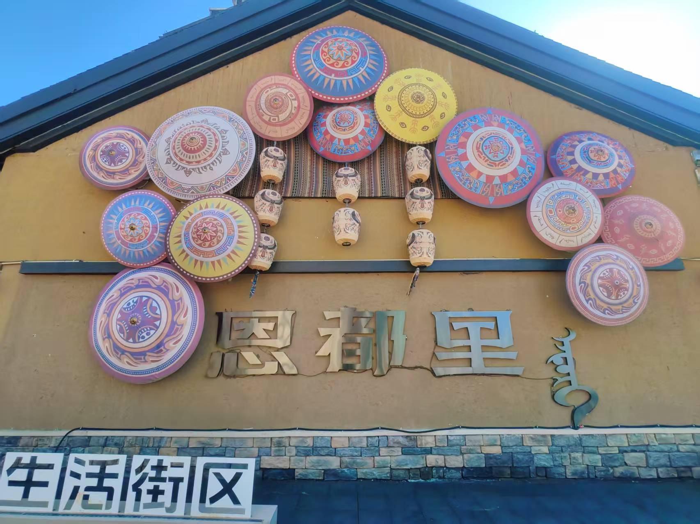

前言:
“出发前，朋友听说我要去吉林，第一反应都是:’看下雪啊？’
我摇摇头。
到了长白山，没下雪，只有积雪；到了延吉，也没下雪.
但我一点都不遗憾.
因为没下雪的吉林，反而让我看见了更真实的东西——
主题:
某一天晚上，我来到了吉林省长白市，出机场后直接上了去二道白河的车。车窗外的路灯稀疏，到了住处安顿好，已经快11点。二道白河的夜晚安静得不像话，街上几乎没人，只有风穿过街道的声音。我在住处楼下站了一会儿，路上没一个行人，整条街道好像只有我自己…😮
第二天 一早，本意打算打车去北坡集散中心，但打不到车最后走了两公里抵达集散中心😶
北坡的景点是串成一条线的，首先是瀑布，远远就能看到一条白练从山崖间垂下来，走近了才发现那不是「水」，而是冰与水的混合物.
然后是小天池。小天池是完全冻死的。白花花一片，平整得像一面蒙了霜的镜子。池边的木栈道上也覆着冰，走上去要扶着栏杆慢慢挪.
绿渊潭也冻了大半，只在最中心有一小洼水，绿得发亮，像谁在白色的盘子里滴了一滴颜料。潭边的冰挂垂下来，长短不一，阳光穿过的时候折射出细碎的光点.
地下森林是那天最后一个点，台阶旁的积雪很多，踩上去是那种冰沙质感。空气里全是松木和雪混合的气味，冷得纯粹，没有一丝杂味。在某个观景台停下来，四周一片寂静，连鸟叫都没有，只有风穿过树梢时低沉的呜咽声.
长白山这段旅途的遗憾就是天池没开，那时候的天池，天气状况并不好，总是有大雪和大风伴随，但碰巧我走的那天当天开了，有点可惜就是了，以后再说吧！回程的车上我忽然想通了：天池是长白山的”正面照”，而我今天看到的，是长白山的”背面”。瀑布冻成了冰，小天池白得彻底，森林里积雪没过脚踝——这些是长白山在春天依然不肯退场的冬天。没见到天池，反而让我把山的其他部分看得更仔细了.🤓(PS:抵达长白市当晚凌晨下了点小雪，但是我睡着了，起床后听邻居说了才知道)
第三天 没有安排，就沿着二道白河镇慢慢走，散步，路上行人依旧稀少，尝试了本地的高丽火盆，后来我来到了恩都里生活街区，到处逛，这里类似广场，路中间还有一颗圣诞树，那种巨大的、商场门口会放的那种人造圣诞树，就这么突兀地站在广场边上，树上还挂着彩球和灯串，只是没亮.

中午饭找了很长时间饭店，终于碰到一个有人且开着门的饭店了，尝试了一下朝鲜拌饭感觉还行吧，下午就打车前往延边了，抵达之后第一时间前往了高铁站前去图们站，去观望一下中国国门图们口岸，对面是朝鲜人民居住的地方，有望远镜能看见，手机拍摄不是很清楚.🤗
晚上前往延边大学，亲眼见证所谓的网红墙，我没拍几张，倒是盯着那些招牌看了很久。朝鲜文和中文并排写着同一家店的名字，有的翻译得工整，有的只是音译，读起来有一种奇妙的错位感，这种文化交叠的痕迹，比网红墙本身更耐看，在附近瞎逛，顺便找了家饭馆，分享一下照片吧.
第四天 早从延吉出发飞往香港，航程三个多小时。落地的时候热浪扑面而来，我感觉像做梦一样——几个小时前还在延吉的冷风里裹着厚厚衣服，现在站在维多利亚港边，晒着太阳，度过平静的夜晚，在第五天的早上，我享受着在香港最后的一丝安心感，踏上了回家的路程.😁
结尾:
这段旅程是一次很不错的经历，我想我会记住一辈子，在无聊或不快乐的时候想起，可以让我开心些！图片太多了就不好分享了，如果你需要，可以找我，我会发给你的: )😊